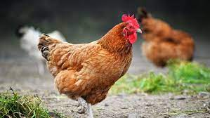

The chicken (Gallus gallus domesticus) is a domesticated junglefowl species, with attributes of wild species such as the grey and the Ceylon junglefowl[1] that are originally from Southeastern Asia. Rooster or cock is a term for an adult male bird, and a younger male may be called a cockerel. A male that has been castrated is a capon. An adult female bird is called a hen and a sexually immature female is called a pullet. Humans now keep chickens primarily as a source of food (consuming both their meat and eggs) and as pets. Traditionally they were also bred for cockfighting, which is still practiced in some places.
According to Merriam-Webster, the term rooster (i.e. a roosting bird) originated in the mid- or late 18th century as a euphemism to avoid the sexual connotation of the original English cock[23][24][25], and is widely used throughout North America. Roosting is the action of perching aloft to sleep at night.[26]
Chickens are omnivores.[27] the wild, they often scratch at
the soil to search for seeds, insects, and even animals as large as
lizards, small snakes,[28] or sometimes young mice.[29]
The average chicken may live for 5-10 years, depending on the
breed.[30] The world's oldest known chicken lived 16 years
according to Guinness World Records.[31]
Roosters can usually be differentiated from hens by their striking
plumage of long flowing tails and shiny, pointed feathers on their
necks ('hackles') and backs ('saddle'), which are typically of
brighter, bolder colours than those of females of the same breed.
However, in some breeds, such as the Sebright chicken, the rooster has
only slightly pointed neck feathers, the same colour as the hen's. The
identification can be made by looking at the comb, or eventually from
the development of spurs on the male's legs (in a few breeds and in
certain hybrids, the male and female chicks may be differentiated by
colour). Adult chickens have a fleshy crest on their heads called a
comb, or cockscomb, and hanging flaps of skin either side under their
beaks called wattles. Collectively, these and other fleshy
protuberances on the head and throat are called caruncles. Both the
adult male and female have wattles and combs, but in most breeds these
are more prominent in males. A 'muff' or 'beard' is a mutation found
in several chicken breeds which causes extra feathering under the
chicken's face, giving the appearance of a beard.[32]
Domestic chickens are not capable of long-distance flight, although
lighter chickens are generally capable of flying for short distances,
such as over fences or into trees (where they would naturally roost).
Chickens may occasionally fly briefly to explore their surroundings,
but generally do so only to flee perceived danger.